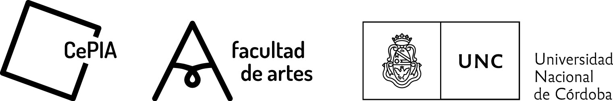

Sobre el Cuerpo: cruces entre dibujo, gráfica y performance.
Este proceso consiste en una serie de acciones realizadas (9 acciones), en las que mi mano izquierda
exploraba sensorialmente mi cuerpo y el espacio que me rodeaba, al mismo tiempo que mi mano derecha
registraba la acción dibujando dicho recorrido. Enlazando en una misma práctica tres lenguajes de las artes
visuales como la performance, el dibujo, y la gráfica. En estas experiencias, el cuerpo pasa por diversas
sensaciones que lo llevan al límite conectándose a la experiencia, por lo que lo entendemos en tres directrices;
con respecto al dibujo, como sujeto/objeto de representación; al grabado, como matriz/ soporte y en la
performance concebido como sujeto de presentación.
De acuerdo con lo anterior, el acto de dibujar es un acto performativo, acto que se asemeja a lo ritual.
Debo manifestar que mi interés no es solamente eso, sino que a medida que las performances transcurrían,
exploraba otras posibilidades como los espacios de realización, la relación entre el cuerpo y el espacio, el
movimiento ante estímulos sonoros, los modos y las posibilidades de iluminación, los diferentes soportes y
materiales, como así también sus diversas disposiciones, la incorporación de la escritura, etcétera.
Todo este trabajo, fue producto de mi Trabajo Final en la Licenciatura en Artes Visuales, el paso
final (hasta el momento) de un proceso medianamente corto (para mi entender) sé que no hará otra cosa
que remontar. Remontar en el sentido de que a partir de las conclusiones que he llegado aquí, podré tomar
decisiones sobre lo que ya tengo y desplegar otras posibilidades, las cuales están en proceso de
germinación
Estas experiencias estéticas son producto de una tesis de grado perteneciente a la Universidad Nacional de Córdoba, Argentina.
Para más información adjunto la investigación completa.